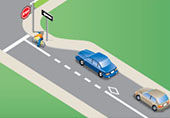
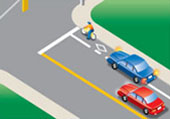
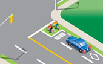
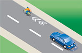
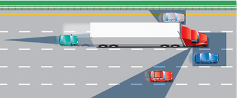
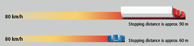
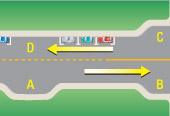
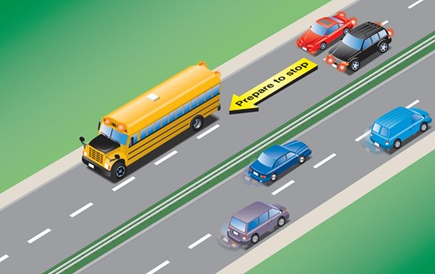
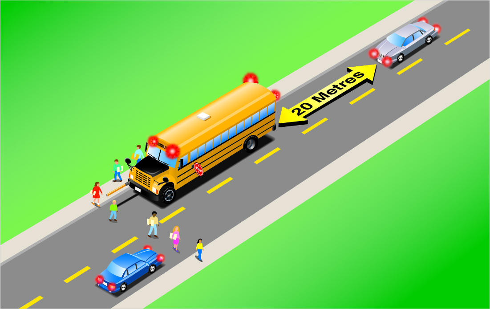

Ontario’s roads accommodate many road users, including pedestrians, motorcycles, bicycles, large trucks, buses and farm machinery. Be aware of other road users, the speed at which they travel and the space they occupy on the road.
Sharing the road with pedestrians
Road safety is a responsibility that is shared between pedestrians and drivers. Pedestrians must ensure that drivers have seen them and that drivers are stopped, or are about to stop, before entering the roadway. Drivers need to exercise due diligence in the care and operation of their vehicles, to properly respond to the presence of pedestrians. In most cases, that means yielding to the pedestrian.
Reminder: Eye contact between the pedestrian and driver is one of the keys to pedestrian safety.
Watch for children – Drive slowly and cautiously through school zones, residential areas and any other location where children may be walking or playing. A driver should not rely on a child's knowledge of traffic laws, so expect the unexpected. A child might dart out from between parked cars or try to cross a street without checking for traffic. Be extra cautious at twilight when children may still be playing outside, but are difficult to see.
Watch for all crosswalks – A crosswalk can be the portion of a roadway that:
- connects sidewalks on opposite sides of the roadway into a continuous path
- has signs, lines or other markings on the roadway for pedestrian crossing Do not pass a vehicle stopped at a crosswalk. A stopped vehicle may be a clue that a pedestrian is crossing.
Reminder: Not all crosswalks are marked, but nearly all intersections have crosswalks.
Watch for school crossings and guards – Drivers, including cyclists, must stop and yield the whole roadway at pedestrian crossovers, school crossings and other locations where there is a crossing guard.
Only when pedestrians and school crossing guards have crossed and are safely on the sidewalk can drivers and cyclists proceed.
Watch for community safety zones – Signs indicate areas where the community has identified that there is a special risk to pedestrians.
Watch for slow pedestrians – Many modern urban roads often do not allow sufficient time to cross for slow pedestrians during the normal traffic cycle. So be patient and allow all pedestrians time to cross.
Seniors or pedestrians with disabilities need extra caution and courtesy from drivers, as they may be slow in crossing the road.
Pedestrians who are blind or with a visual disability may use a white cane or guide dog to help them travel safely along sidewalks and across intersections.
Watch when driving quiet vehicles – Drivers of hybrid or electric vehicles should be aware that vision-impaired people often rely on the sound of an engine before entering an intersection. When you are slowing or stopping, your vehicle makes little or no discernible noise, so extra caution is required.
Watch for wheelchairs and medical scooters – People operating motorized wheelchair and medical scooters are pedestrians too.
Watch for streetcars – Some streetcar stops have a special safety island or zone for passengers getting on and off. Pass these safety islands and zones at a reasonable speed. Always be ready, in case pedestrians make sudden or unexpected moves.
Watch for texters – A no-texting rule isn’t only for drivers. Pedestrians are often distracted while using devices, including cell phones, ear buds, hand-held device, GPS, and music players. People using ear buds/headphones often can't hear car horn or other traffic noise.
Watch for dark clothing – Pedestrians in dark clothing, especially at night, are difficult to see. Extra care is needed when driving in low-light conditions. Twilight and dark clothing often initiate a collision.
Watch for new transport – With the introduction of new technology, more vehicles such as e-bikes and e-scooters are appearing on roadways. These vehicles may require increased awareness for all road users.
Watch during turns – Safer, signaled crosswalks aren’t immune to vehicle-pedestrian collisions. Many more people get hit by cars turning left than by cars turning right, because both parties are looking elsewhere: The drivers are busy negotiating the intersection while street-crossers are looking straight ahead.
Sharing the road with cyclists
Bicycles and mopeds travelling at a lower speed than other traffic are expected to ride about one metre from the curb or parked cars, or as close as practical to the right-hand edge of the road when there is no curb. However, they can use any part of the lane if necessary for safety, such as to:
- Avoid obstacles such as puddles, ice, sand, debris, rutted or grooved pavement, potholes and sewer grates
- Cross railway or streetcar tracks at a 90° angle
- Discourage passing where the lane is too narrow to be shared safely
- A bike lane may exist adjacent to parking bays (See Diagram 2-10)

Diagram 2-10
Cyclists are not required to ride close to the right edge of the road when they are travelling at or faster than the normal speed of traffic at that time and place, or when they are turning left, or getting in position to turn left. (Cyclists are permitted to make a left turn from a left-turn lane, where one is available.)

Diagram 2-11
When passing a cyclist, drivers of motor vehicles must maintain a minimum distance of one metre, where practical between their vehicle and the cyclist. (See Diagram 2-11.) Failure to do so may result in a fine and an additional two demerit points on the driver’s record. Whenever possible, you should change lanes to pass.
Do not follow too closely behind cyclists. They do not have brake lights to warn you when they are slowing or stopping.
Intersections – To avoid collisions with bicyclists at intersections, remember the following:
- When turning right, signal and check your mirrors and the blind spot to your right to make sure you do not cut off a cyclist.
- When turning left, you must stop and wait for oncoming bicycles to pass before turning.
- When driving through an intersection, be careful to scan for cyclists waiting to turn left.
Do not sound your horn unnecessarily when you are overtaking a cyclist. It may frighten them and cause them to lose control. If you feel that you must use your horn, tap it quickly and lightly while you are still some distance away from the cyclist.

Diagram 2-12
Bike lanes are reserved for cyclists. They are typically marked by a solid white line. Sometimes you will need to enter or cross a bike lane to turn right at a corner or driveway. (See Diagram 2-12) Take extra care when you do this. Enter the bike lane only after ensuring that you can do so safely, and then make the turn.
Watch for cyclists' hand signals. A cyclist may indicate a right-hand turn by extending their right arm.
Try to make eye contact when possible with cyclists.

Diagram 2-13
Bike boxes help prevent collisions between motorists and bicycles at intersections. It is typically a painted box on the road with a white bicycle symbol inside. Bicycle lanes approaching and leaving the box may also be painted. As a driver, you must stop for a traffic signal behind the bike box. Do not stop in the box. See (Diagram 2-13)

Diagram 2-14
Sharrows A bicycle sharrow, two chevrons painted above a bicycle symbol on the road, indicates the lane is shared. Vehicle or bicycle traffic may be in the lane. Although you should always keep on the lookout for bicyclists, this serves as an additional warning to watch for them in the lane. See (Diagram 2-14)
Children riding bicycles on the street may lack the necessary training and skills for safe cycling. They may not be aware of all the dangers or the rules of the road. Watch for children on oversized bicycles, as they may not have the ability to control it. When parked on the side of the roadway, look behind you and check your mirrors and blind spots for a passing cyclist before opening a door.
Sharing the road with motorcycles and limited-speed motorcycles
Motorcycles, limited-speed motorcycles, mopeds and bicycles are harder to see because of their size. Drivers of these vehicles may make sudden moves because of uneven road surfaces or poor weather conditions. Because they are less protected, they are more likely to be injured in a collision.
Motorcycles use a full lane; treat them like other vehicles when driving. Since many motorcycle turn signals do not automatically shut off, be careful when turning left in front of an oncoming motorcycle with its turn signal on. Make sure the motorcyclist is actually turning; he or she may have just forgotten to switch off the turn signal.
Sharing the road with large commercial vehicles
It is extremely important to know how to drive safely when sharing the road with large commercial vehicles such as tractor-trailers and buses. Recent data show that the majority of fatalities resulting from collisions involving large commercial trucks are not the result of the truck driver’s actions, but of the other driver’s actions. Therefore, sharing the road with large commercial vehicles means you must always be aware of a large vehicle’s capabilities and limitations, such as of the following:
1. Blind Spots - Large commercial vehicles have big blind spots on both sides. Avoid tailgating a large vehicle. The driver cannot see you if you are directly behind. If the vehicle stops suddenly, you have no place to go. Remember that if you can't see the driver’s face in the large vehicle’s side-view mirror, the driver cannot see you.

Diagram 2-15
2. Stopping Distance - Large commercial vehicles require a much longer distance to stop than smaller vehicles. When passing a large vehicle, do not cut in front closely. Not only is this discourteous, it is dangerous; it reduces the space cushion large vehicles require in order to stop safely. Allow more room when passing a large vehicle.

Diagram 2-16
3. Wide Turns - When making a right turn, a large vehicle may need to first swing wide to the left and around, in order to avoid hitting the right curb. If a large vehicle in front of you is making a right turn, do not move up into the space that opens up in the right lane; you are putting yourself into a very dangerous position. Once the front of the vehicle has cleared the corner, the rest will move partially back into the right lane. If you are in that lane, your vehicle will be squeezed between the trailer and the curb. Stay well back until the truck has completely cleared the lane.
This situation can occur on expressway off-ramps that have two left turning lanes. Do not drive up into the left lane when a large vehicle is making a left turn in front of you. Stay well back until the truck has cleared the left turn, or else you may get squeezed between the truck and the curb.
4. Rolling Back - Leave plenty of room if you are stopped behind a large vehicle. When the driver of a large vehicle releases the brakes after being stopped, the vehicle may roll back.
5. Spray - In bad weather, large vehicles are capable of spraying up large amounts of mud, snow and debris, which could land on your windshield and temporarily block your vision.
6. Turbulence - Due to various factors such as air pressure and airflow, a large vehicle can create heavy air turbulence. This may affect your ability to control your vehicle when passing a large one.
Sharing the road with municipal buses
Many municipal roadways have special indented stopping areas for municipal buses, called bus bays, where passengers can get on and off. There are three types of bus bays:
- Mid-block indented bays
- Indentations immediately before and after intersections
- Bus-stop areas between two designated parking areas
When a bus in a bus bay begins flashing its left-turn signals, indicating that it is ready to leave the bus bay, and you are approaching in the lane adjacent to the bus bay, you must allow the bus to re-enter traffic.

Diagram 2-17
- A: Mid-block indented bays
- B: An indentation before an intersection
- C: An indentation after an intersection
- D: Bus stops between legally parked cars
Sharing the road with farm machinery
Farm machinery moves quite slowly compared to other road users. Most tractors and combines have a maximum speed of 40 km/h, but travel at less than 40 km/h when towing implements or wagons. Farm machinery is often oversized, wide or long or both, making it difficult for the driver to see vehicles coming up from behind. Farmers often turn directly into fields rather than roads or lanes, or move from lane to lane. Remember that it is common for farmers to be on the roads after dark during peak planting and harvesting seasons.
Farm machinery on the road must display an orange and red slow-moving sign on the rear of the vehicle. The sign warns other drivers that the vehicle is travelling at 40 km/h or less. If you see one of these signs, slow down and be cautious. Stay well back and do not pass until it is safe to do so.
Sharing the road with horse-drawn vehicles
Horse-drawn vehicles are one of the slowest moving of all road users. These vehicles range from two-person carts to open or closed buggies carrying up to eight people, and large, wide farm wagons used to carry crops, equipment and other goods. These vehicles will travel primarily on the shoulder of roadways, but may straddle or enter the paved lane where shoulders are narrow or no shoulder exists – such as bridge crossings. Remember that it is common to see horse-drawn vehicles throughout southwestern Ontario and increasingly in eastern and northern Ontario.
Horse-drawn vehicles on the road must display an orange and red slow-moving sign on the rear of the buggy. In addition, many buggies have highly reflective tape affixed to the side and rear of the vehicle. The sign warns other drivers that this vehicle is travelling at 40 km/h or less, and the reflective tape illuminates as headlights hit the buggy. If you see a horse-drawn vehicle, slow down and be very cautious. Maintain a safe following distance and only pass when it is safe to do so. When approaching a horse-drawn vehicle travelling in the opposite direction, move to the far right of your lane. When passing, give as much distance between you and them as possible. Passing too closely could scare or startle the horse, causing it to change direction suddenly on the roadway.
Sharing the road with school buses
When you see a school bus with its overhead amber lights flashing:
- These signals indicate that the bus is coming to a stop to pick up or drop off passengers
- Slow down and prepare to stop whether you are behind or approaching the bus
- If you are on a road with a median strip, only vehicles approach from the rear of the bus should prepare to stop

When you see a school bus with its overhead red lights flashing or its stop arm activated:
- You must stop whether you are behind or approaching the bus
- If you are on a roadway with a median strip, only vehicles approaching from the rear of the bus must stop
- If you are approaching from the rear of the vehicle, stop at least 20 meters away
- Do not proceed on your route until the bus moves, the overhead red lights have stopped flashing and its stop arm is no longer activated
- It is dangerous and illegal to fail to stop for a stopped school bus that has its overhead red lights flashing or its stop arm activated

Summary
By the end of this section, you should know:
- The importance of sharing the road with other road users, especially large vehicles, school buses, cyclists, and pedestrians
- How to share the road with other road users safely and appropriately